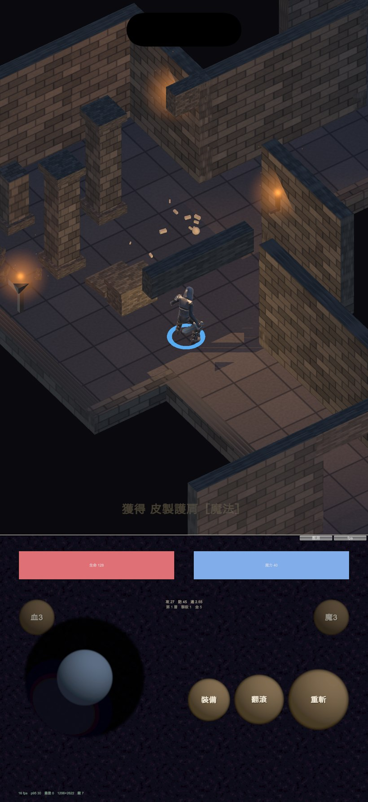
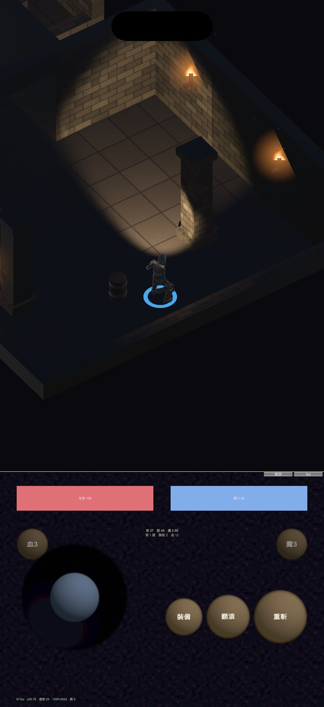
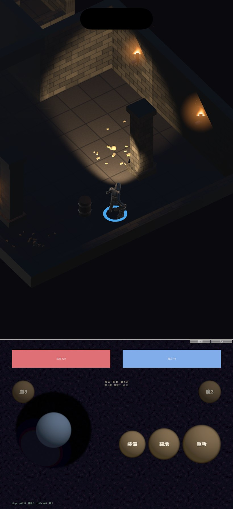

地城迴響 · 視野錐與火焰
只看得到自己與正前方
照明從「以玩家為圓心的圓」改成「貼身微光 + 正前方視錐」。
火焰從一團柔光改成有輪廓、會動的程序化火焰。都在 iOS 模擬器上實跑確認。
改之前 / 改之後

改之前。一顆半徑 8.5 公尺的點光源，整個房間都看得見，
背後跟正前方看到的一樣多——沒有面向的概念。

改之後。正前方一道明確的楔形亮區，錐外幾乎全黑。
柱子在光裡投出影子——光不會穿牆，這是視野感成立的關鍵。

另一個房間。木桶在錐光下拖出長影，遠處的火把只是幾個亮點，
不再照亮整個房間。
怎麼做的
- 貼身微光（點光源，半徑 3.1）：只照亮自己與腳邊。沒有它的話，
轉身的瞬間角色會整個消失。
- 視野錐（聚光燈，58°／13.5 公尺，跟著面向）：看得到什麼由它決定。
要開陰影——不開的話光會穿牆，隔壁房間跟著亮起來。這是唯一花效能的地方。
- 房間火把的照明範圍從 7.6 收到 3.4。火把要看得見（它自己是亮的），
但不能照亮整個房間，否則視錐就沒有意義。
調了兩輪暗度完全沒有效果，原因是一行沒寫。
RenderSettings.ambientMode 從來沒設過，預設是 Skybox
——這時 ambientLight 會被整個忽略，環境光其實來自預設天空盒（很亮）。
所以把環境光從 0.035 壓到 0.011 再壓到 0.005，全部打在空氣上，畫面幾乎沒變。
補上 ambientMode = Flat 之後才是第一次真的在調暗度。
諷刺的是這行我在做版型俯視圖時有寫（那裡需要均勻亮光），卻沒發現遊戲本體缺了它。
火焰
之前是一團徑向柔光——亮度沒問題，但它是一顆不會動的球。
真正讓人讀成「火」的是尖端的舌狀輪廓與輪廓每一幀都在變，不是亮度。
- 程序化產生 8 幀圖集，每幀是一個淚滴形：底部寬、往上收成尖端
- 左右邊緣用兩個不同相位的正弦擾動做出舌頭甩動
- 顏色由下往上白熱 → 黃 → 橘 → 暗紅，alpha 也往上衰減，尖端才會化開
- 四邊形改成直立朝向相機。原本的做法會整個貼齊 42 度俯角，火焰會躺下去
- 每個火把的相位錯開，整層的火才不會同步跳動
不用粒子系統：一層地城十幾個火把，粒子系統的固定成本不值得付。